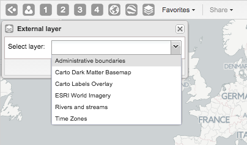
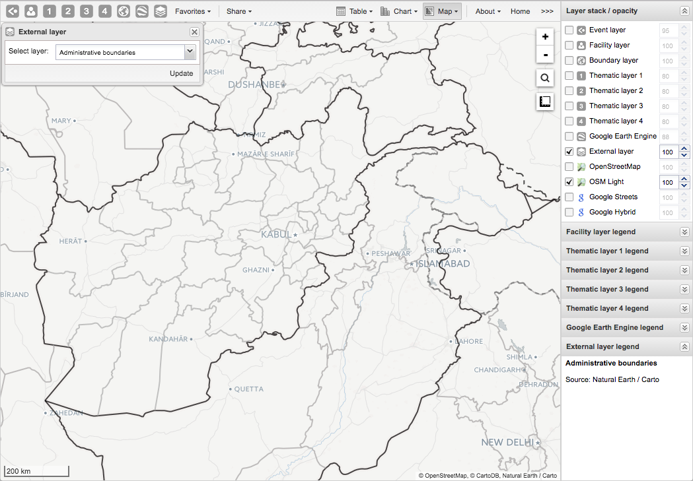
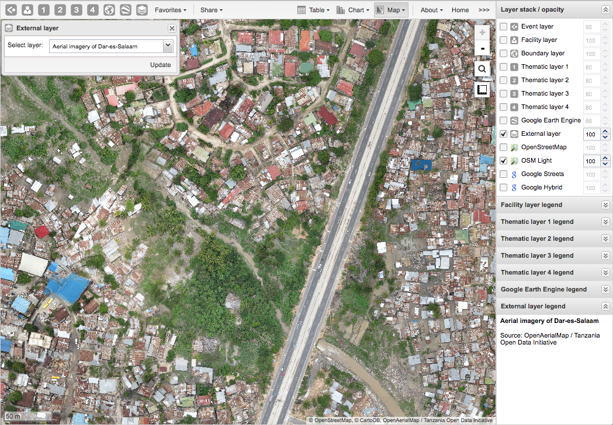
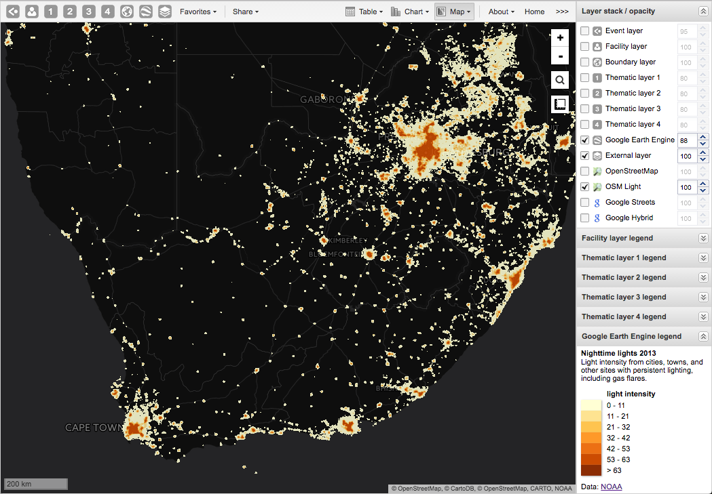
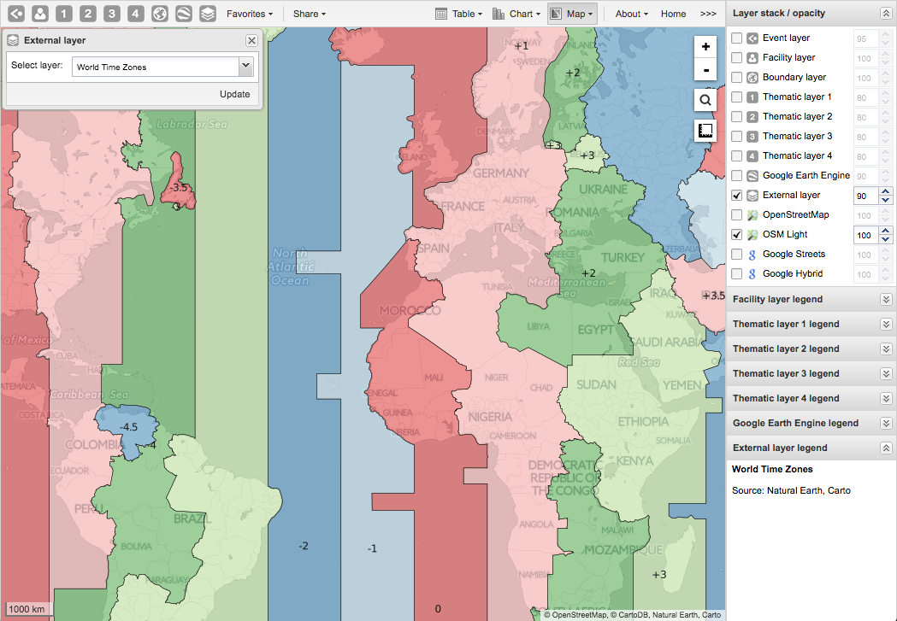

-
In the top menu, click the External layer icon.
-
Click Edit to add a new layer.
-
Select a layer from the list.
 -
Click Update.
To remove a layer, click Clear.
To hide a layer, go to the Layer stack/opacity menu pane and clear the External layer checkbox.
Here are some examples of external layers:
Example 1: First-order administrative boundaries
|  |
Example 2: Aerial imagery of Dar-es-Salaam
|  |
Example 3: Dark basemap with nighttime lights from Google Earth Engine
|  |
Example 4: World time zones
|  |
![[Note]](../Resources/note.png)
|
Note |
|---|---|
|
To define external map layers, see the Maintenance app documentation. |